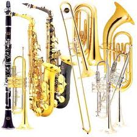
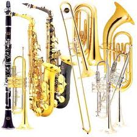

Instruments come in many different shapes and sizes. There are three main keys for wind instruments: C, B Flat, and E Flat. Click on the links above to learn more about the most popular instruments in those keys.
Instruments come in many different shapes and sizes. There are three main keys for wind instruments: C, B Flat, and E Flat. Click on the links above to learn more about the most popular instruments in those keys.
| C | F | B-Flat | E-Flat | A-Flat |
|---|---|---|---|---|
| ©2012 | ||||
| Flute | Mellophone | Soprano Clarinet | Alto Clarinet | Piccolo Clarinet |
| Trombone | Bass Clarinet | Alto Saxophone | ||
| Tuba | Soprano Saxophone | Baritone Saxophone | ||
| Tenor Saxophone | ||||
| Trumpet | ||||
| Sousaphone | ||||